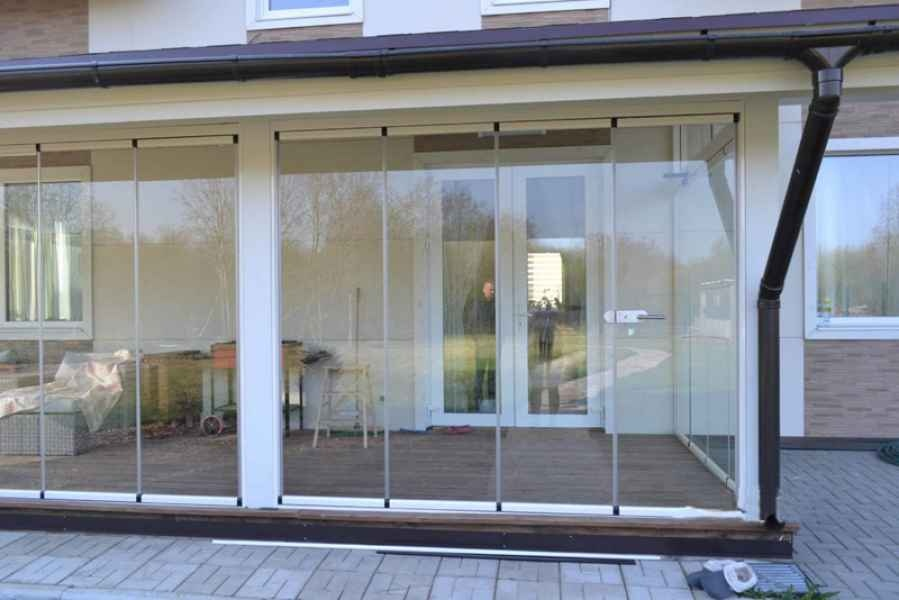

Безрамное остекление · ВоронежОстекление.
Остекление.
Без лишних рам.
Безрамное остекление в Воронеже с установкой. Подбираем системы для террас, веранд, беседок и балконов.
Рассчитать остекление
ПРИМЕРЫ РЕШЕНИЙБольше света.
Больше света.
Открытый вид.
Рассмотрите установленные системы и способы открытия створок. Обсудим размеры проёма, назначение помещения и подходящий вариант остекления.
Рассчитать остекление